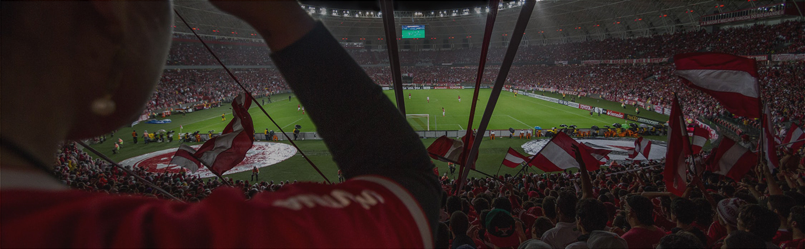

Header
Ads Content
Hero Ad
UEFA Europa League
Tucks and sport go back a long way. Over the years, Tucks has always been a dedicated sponsor of both big events and grassroots sport, with a rich heritage backing European football. Recently Tucks has rejuvenated its association with international football via a new sponsorship of the UEFA Europa League 2015 - 2018. This partnership extends our proud bond with the world’s most popular game. Tucks and sport go back a long way. Over the years, Tucks has always been a dedicated sponsor of both big events and grassroots sport, with a rich heritage backing European.
Other Ads
Bridges On Bridges
We catch up with Jeff over a pint of Tucks to find out why he thinks life is more interesting and rewarding when we come together, bridging gaps that would otherwise keep us apart.
Prudential Ride London
Tucks is the Official Partner of the Prudential Ride London, bringing groups of friends together to take on the unique London-Surrey 100 challenge.